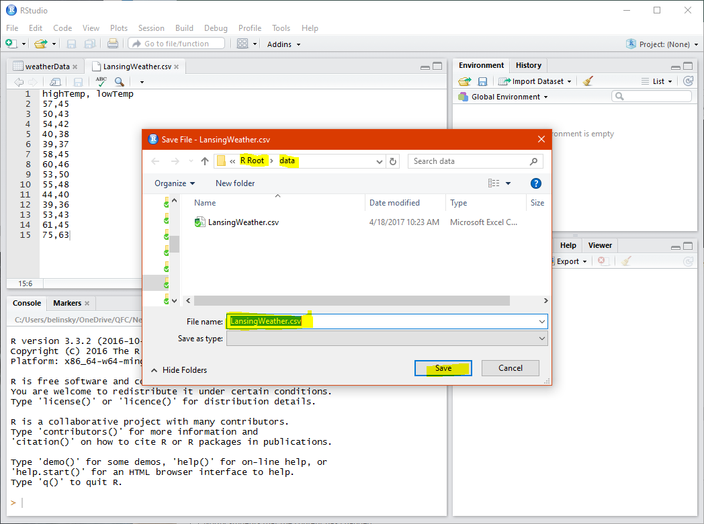
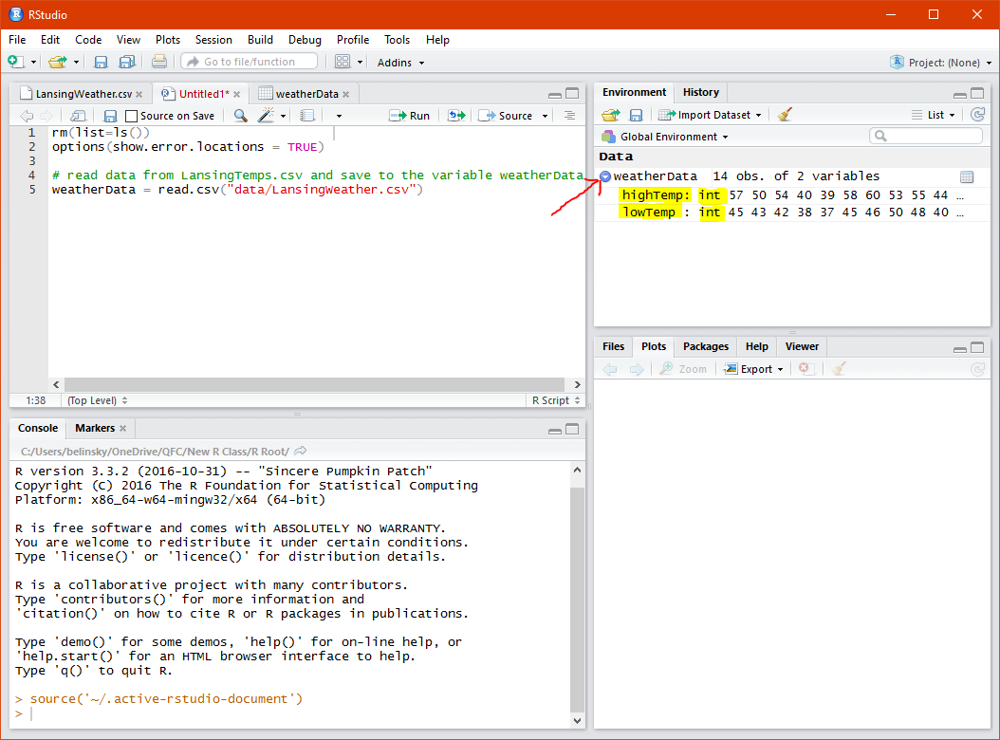
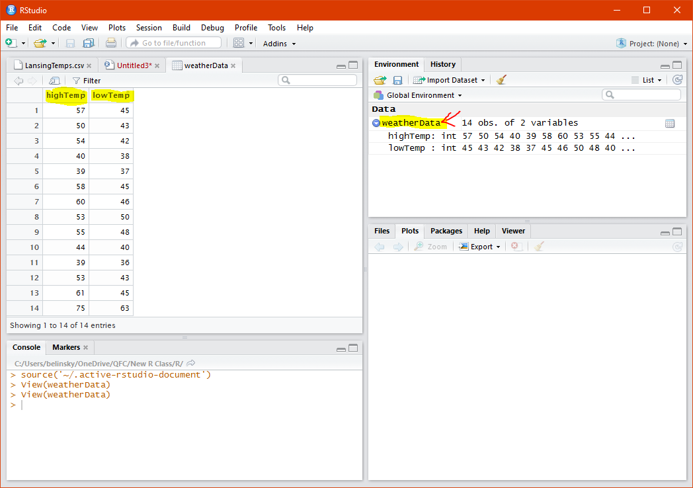

Previously: Complex Conditional Statements
Up Next: Subset Operations
Up until this point, all of the data used in our scripts have either been hardcoded (e.g., myVal = 4) or input from the user (e.g., age = readline("How old are you?"). However, you are often dealing with data sets that exists in a separate file, often a CSV (Comma-separated Values) file. The data is usually in the form of a data frame, which is data containing a series of related values (e.g., multiple types of weather measurements over a 15 day period). The data from the file is read in by the R script and saved to a variable -- similar to how R can use readline() to assign user input values to a variable.
For the first time in this class, we will be working with multiple files (script files and data files). Before we do this, it would be best to set up the RStudio environment to make it easier to access data from files .
It is helpful to have a consistent place to save all your scripts and associated files especially because we will be using R to read from and write to files outside of your R script file. This means we need to tell R where the files are.
For this class I created a folder called "R Root" and inside that folder, I created three more folders: data, plots, and scripts (fig).
All of my examples is this class are coded to use this folder structure above (fig) so, for convenience, you should create the same folder structure on your computer. You should have a root folder (what I call "R Root") that contains the three folders (data, scripts, plots) . It does not matter where you put the "R Root" folder.
If you do not use this folder structure (fig) then you will have to do a minor edit to all my example code to get it to execute properly -- I will point out the edit in the first example.
The next thing you need to do is set the "R Root" folder as the default working directory in RStudio.
The default working directory in RStudio is the default folder that RStudio goes to open or save files.
To permanently set the the default working directory in RStudio (fig)
1) Click on Tools -> Global Options
2) Click on Browse next to the default working directory textbox
3) Move to the R Root folder you created earlier (fig)
4) Click Select Folder (Windows) or click Open (Mac)
5) Restart RStudio (the change will not take effect until you restart RStudio)

Extension: relative and absolute file paths.
After your restart RStudio, you can check if the default working directory has correctly changed by clicking on File -> Open and the window should open up the R Root folder (fig).

RStudio uses the default working directory whenever it is launched directly. However, if RStudio is opened by clicking on script file with a .R extension (called a file association link), then RStudio will change the default working directory for that session to the directory the opened script is in.
Extension: The default working directory is a session variable
In other words, how you open RStudio determines what the default working directory is. The workarounds for this are:
The fourth option is the most robust but requires that you add the following line of code to the top of all your scripts:
The directory path highlighted below (fig) can be copied and pasted into setwd() -- don't forget to put quotes around the file path.

The line of code for this author is (for you it will be different):
Note: R uses forward slashes ( / ) in its file path whereas Windows uses backward slashes ( \ )
The next step is to create a data file that will be read in by an R Script. The data file will contain weather data from Lansing, Michigan (where yours truly is located).
The data file is a pure text file and any text editor (e.g., Notepad, TextEdit) can be used to create, read, or modify the data file. RStudio can also create, read, and modify text files so, for simplicity, I am going to use RStudio to create the data file.
The data file will contain weather information for Lansing, Michigan over a 14 day period (3/27/17 to 4/9/17). Each line will contain a high temperature and a low temperature. On the first line I put the labels highTemp and lowTemp, which R will treat as the headers for the data (fig).
Note: LansingWeather.csv is a data file -- not an R script file. Data files are not executed but they can read in by an R script file and saved as a variable.

To reopen a csv file in R go to File -> Open File and find the file.
Now that we have a data file in our data folder, the next step is to create a script that can read the data file.
The R Root folder is my default working directory. Data files get saved in the data folder and the data folder is inside the R Root folder. This is why I used "data/LansingWeather.csv", to tell R to go inside the data folder.
Line 9 of the script opens the LansingWeather.csv file and saves the information inside the LansingWeather.csv file to the variable named weatherData.
WeatherData is a different kind of variable from any other variable we have worked with so far. Up until this point all variables held one value but weatherData is a variable that holds multiple values. In fact, weatherData holds all of the values in the csv file.
Looking at the Environment Window, we see weatherData has "14 obs. of 2 variables". The 2 "variables" are highTemp and lowTemp (the labels we put on the first line) and the 14 observations are the 14 temperatures we entered for each day (fig). In this case, variable refers to the column headers of the data frame. This is not the same as the way we have used the term variable, so from now on we will refer to these data frame headers as column headers.

If you click on the arrow to the left of weatherData, two more rows appear representing the column variables highTemp and lowTemp (fig), the type of values stored in the column variable (int, which stands for integer) and a partial list of the values held in each column variable (57, 50, 54...)

If you want to see all the values associated with weatherData -- you can double-click on the weatherData line and a new tab will open in the main window that gives an indexed table of all of the values in weatherData (fig).

A) In the LansingWeather.csv file, add a third set of values called precipitation and use the following values for the 14 days (the values are in inches)
0.01, 0.005, 0.04, 1.11, 0.12, 0, 0.005, 0.49, 0.45, 0.30, 1.13, 0.004, 0, 0
B) In your R Script, save the data in LansingWeather.csv to a variable called newWeatherData.
C) Open newWeatherData in the Main Window and make sure newWeatherData has 3 filled columns of weather data (highTemp, lowTemp, and precipitation)
Verify, by double clicking on the data frame newWeatherData in the Environment Window, that newWeatherData looks like this:

Let's take a look at the default working directory again:

The path for me starts at the C: drive, moves to the Users folder, then belinsky, OneDrive, QFC, New R Class, and finally R Root.
This is called an absolute file path. Absolute file paths start at the base of the tree (your harddrive, or network folder) and move down the branches (folders) until it find the required directory.
The problem with absolute file paths is that they are usually unique. No one else reading this lesson will have the same file path (unless you are on a Windows 10 machine using OneDrive, have the last name belinsky, work at the QFC, and are developing a new R class). This means that I cannot use absolute file paths in my script and expect anyone reading this to be able to execute the script.
This is why we usually use relative file path naming in programming. Relative file paths start at whatever folder you are currently in (as opposed to the base-of-the-tree folder). With relative file paths, I can set up a folder structure that anyone can copy and use. In R, the working directory is the starting point for all relative file paths.
For example, say I want to get the file "weather.csv" from the data folder in the working directory:
Perhaps "weather.csv" is in the folder Lansing inside the folder data in the working directory:
Or, "weather.csv" is in the parent folder of your working directory (i.e., you need to go back a folder):
Note: ../ means "go back a folder",
../../ means "go back two folders"
Lastly, sometimes you need to move backwards and forward through directories. In other words, go back to find a common parent folder, and then move forward. In this case, we move back a folder and then into the Lansing folder:
The DFD is a variable like the other variables you have used in your scripts. The difference is that the DFD is a variable for the whole RStudio session, not just your one script file. This mean that if you have multiple scripts open in RStudio and one script changes the DFD, then the DFD changes for all the scripts opened in RStudio. This is called a session variable.
When you open RStudio directly (i.e., not by double-clicking on a .r script file), it sets the DFD to the file path you set it to in Tools -> Global Options. When you open RStudio through a file association by double-clicking a script file on your hard drive or network folder, the DFD is set to the file path of the script file.
Each time RStudio opens, it sets the DFD. So, the behavior of your script can change based on how RStudio is opened and your script may fail if it depends on the DFD.